매출·매입·고객 정보처럼 외부 SaaS에 올릴 수 없는 데이터를,
수집부터 분석·시각화·보고까지 한 플랫폼에서.
조직의 서버에 설치해 운영하는 AI 데이터 플랫폼입니다.
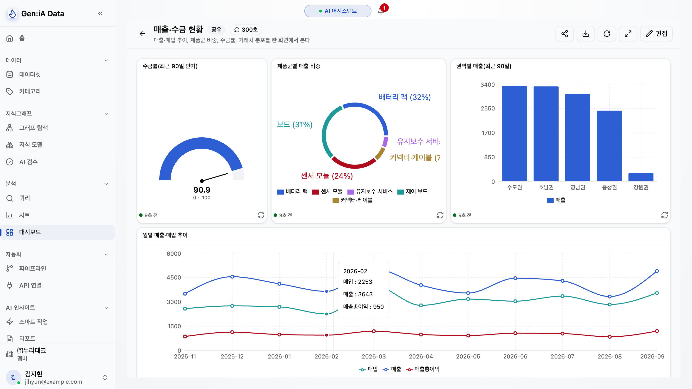
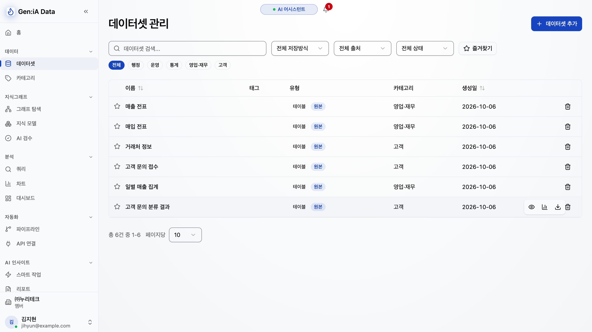
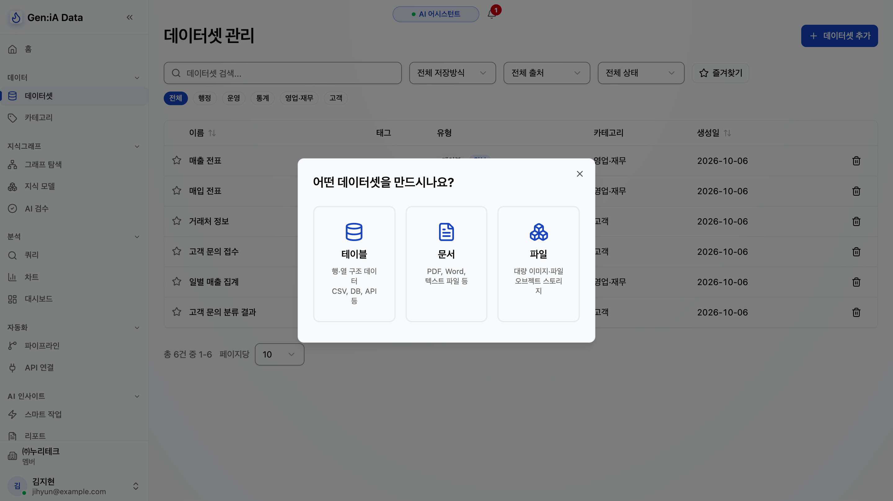
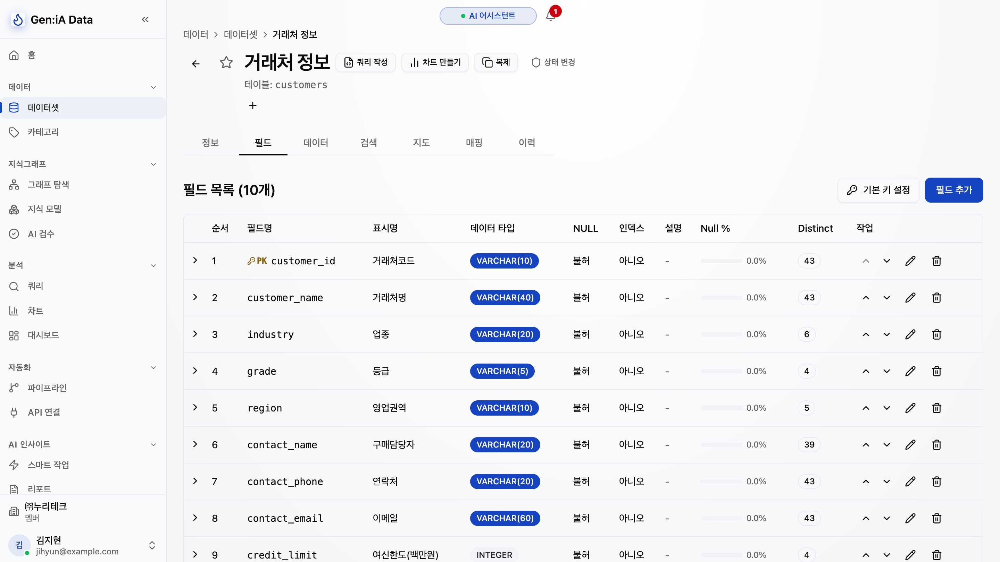
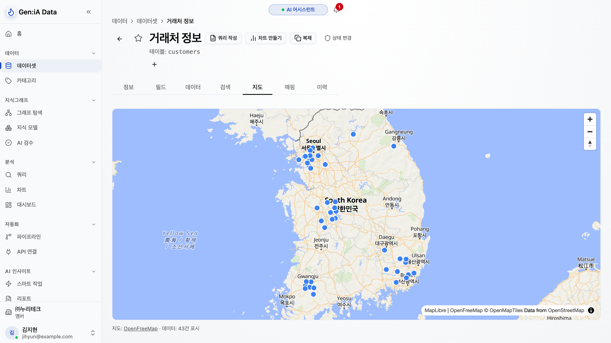
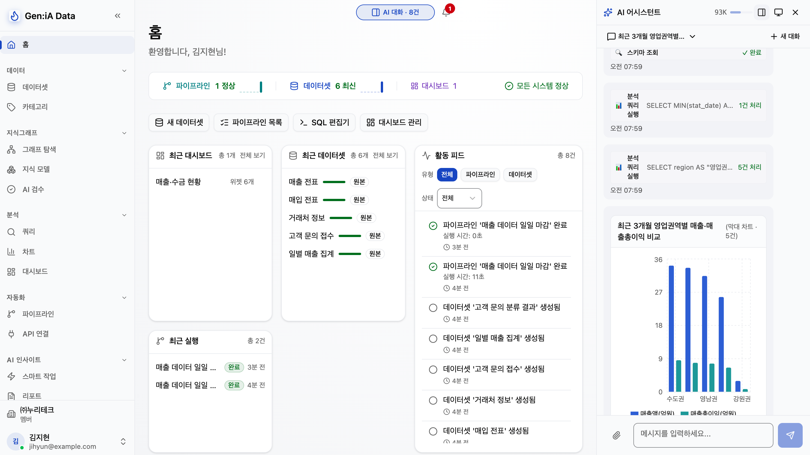
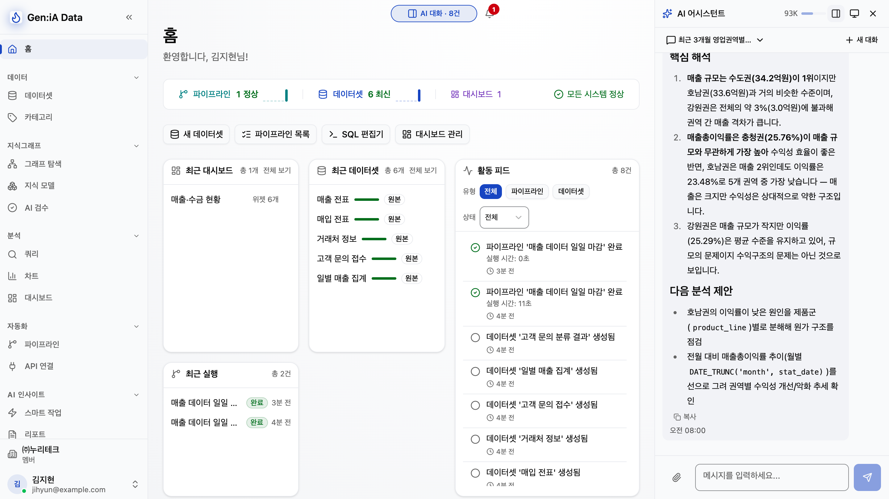
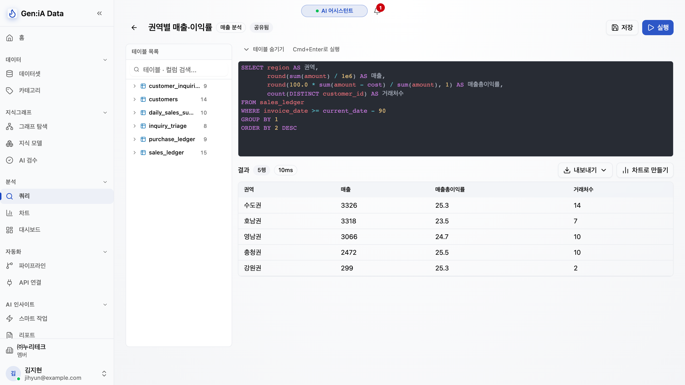
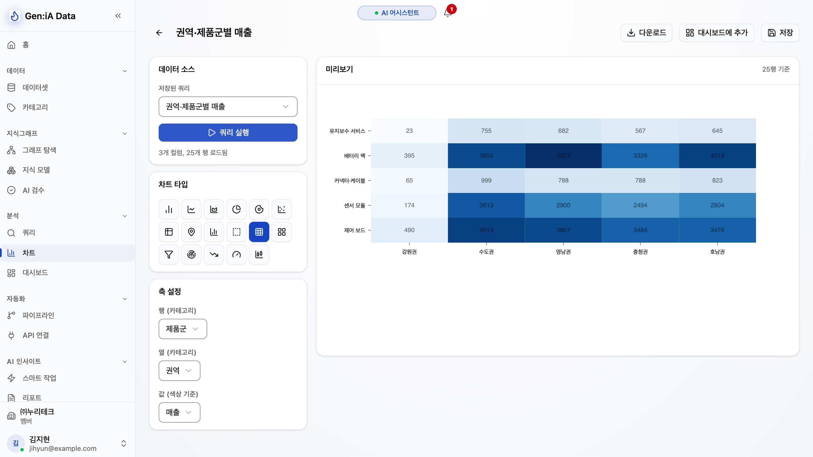
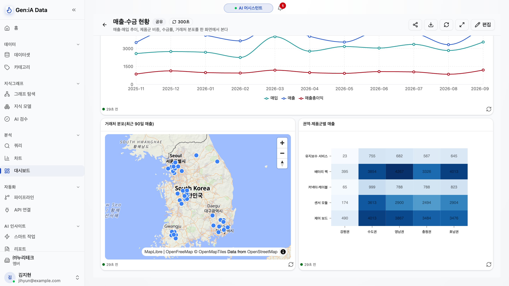
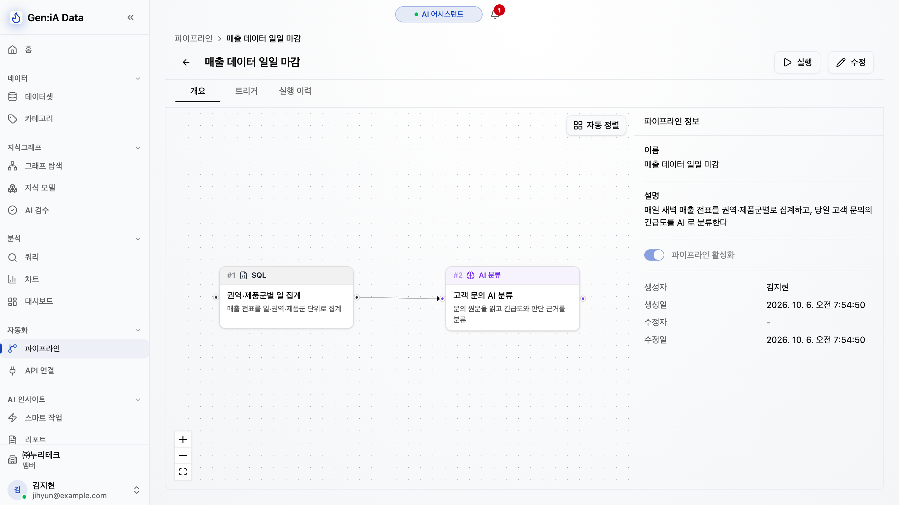
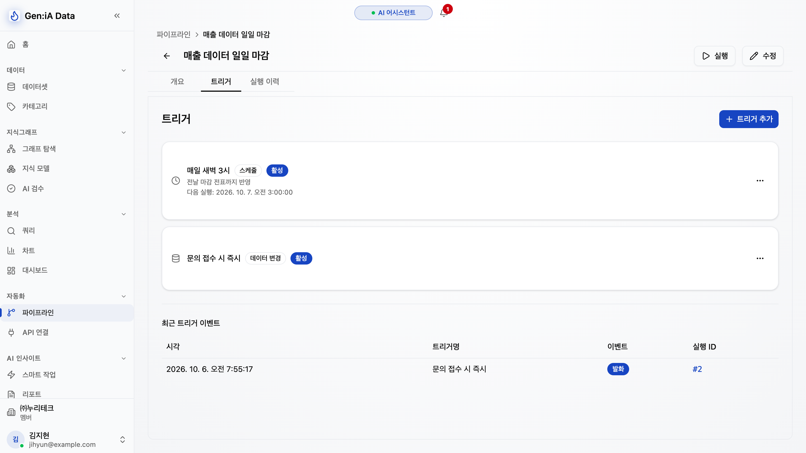
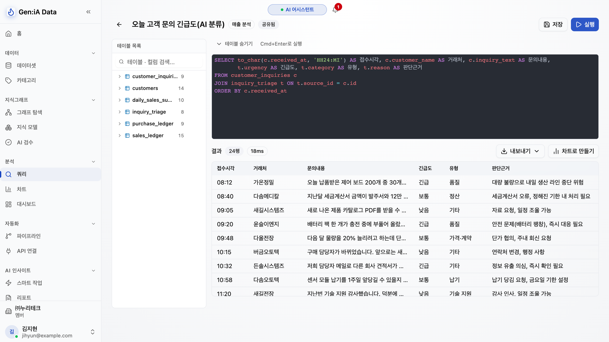
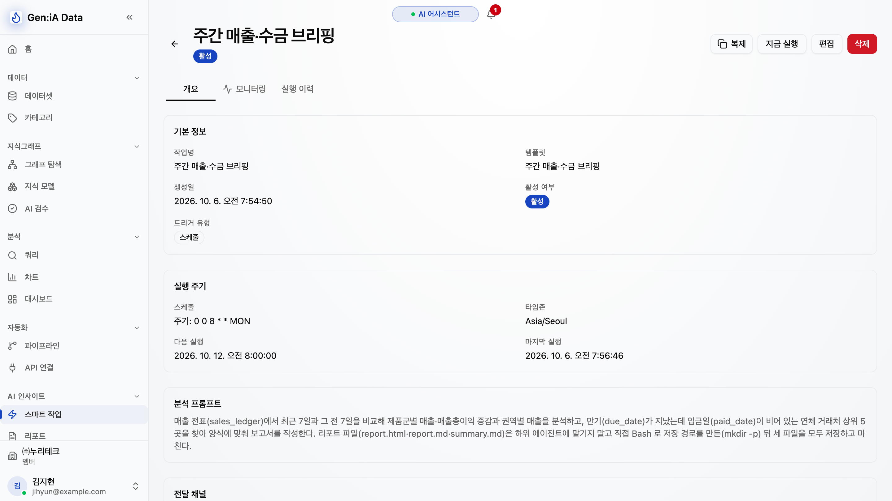
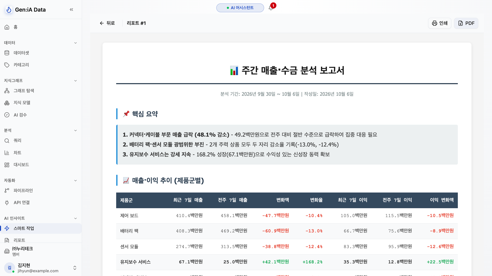
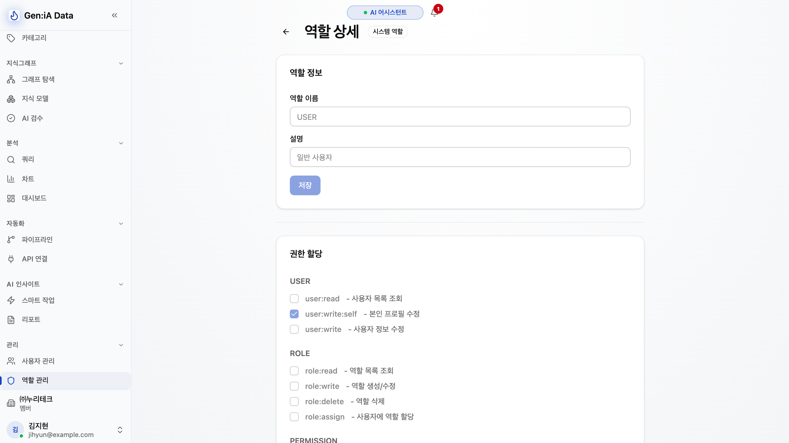
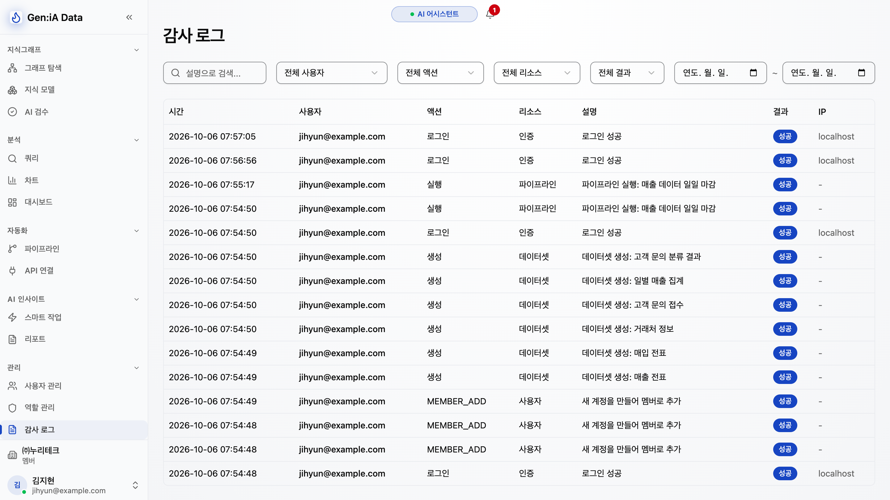
웹 · API 서버 · AI 에이전트 · 파이프라인 실행기
관계형 DB(공간·벡터 확장) · 그래프 DB · 파일 저장소
관리자가 설정 화면에서 연결할 모델과 방식을 정합니다.